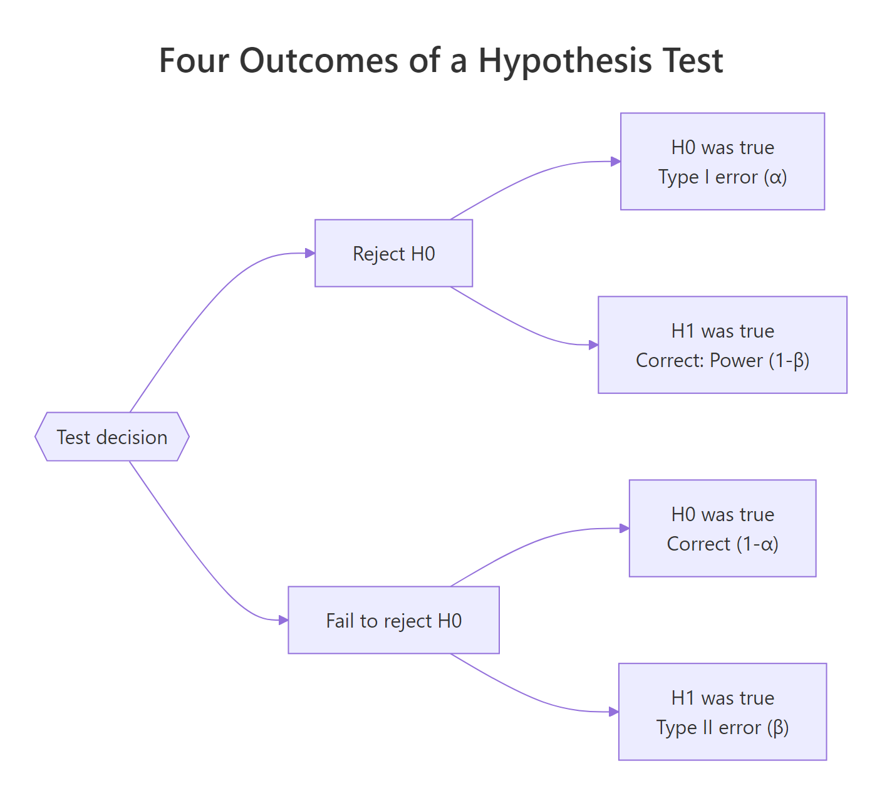
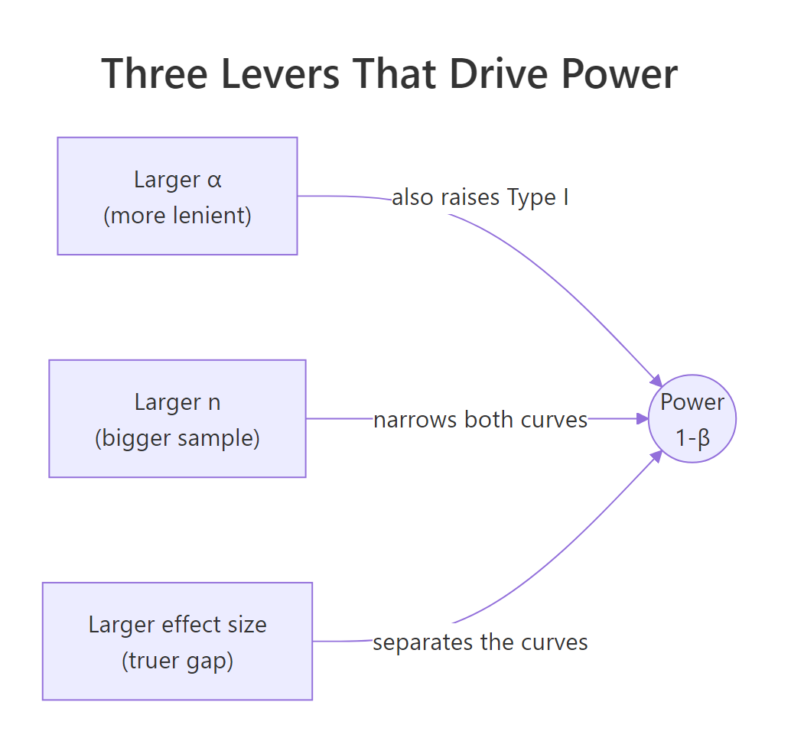
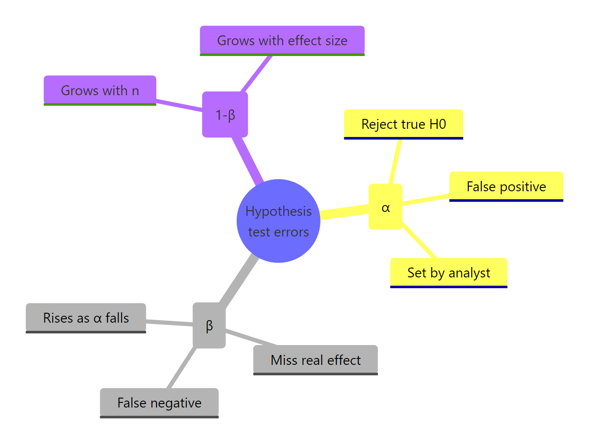

Type I and Type II Errors in R: Visualise the Trade-Off Between α and Power
A Type I error rejects a true null hypothesis (a false positive, probability α), and a Type II error fails to reject a false null hypothesis (a false negative, probability β). Statistical power, 1 − β, is the probability of actually detecting a real effect when one is present.
What are Type I and Type II errors?
Every hypothesis test chooses between two worlds: the null distribution H₀ and the alternative distribution H₁. Both curves overlap, and any "reject" cutoff you draw will push a sliver of each distribution into the wrong bucket. The clearest way to see this is to plot both curves and shade the regions that become α and β. Let's build one picture and read every quantity straight off it.
We'll build a reusable helper, plot_power(), that takes an effect size d, a sample size n, and a significance level alpha, then draws the two sampling distributions with α shaded red (Type I) and β shaded blue (Type II).
The title of the figure is the whole story. At a Cohen's d of 0.5 and n=30, the critical Z sits at 1.645 (the 95th percentile of the null). The red slice of the null curve above that line is exactly 5%, your Type I rate. The blue slice of the alternative curve below the same line is β ≈ 13.5%, the probability you'd miss this real effect. Everything that follows is just sliding the three inputs (d, n, alpha) and watching these two areas change.

Figure 1: The four outcomes of a hypothesis test, two errors, two correct decisions.
The same four outcomes live in every test. Let's write them as a small table so the names stop blurring together.
Reading this table carefully is worth a minute. α and β live in different rows: α conditions on H₀ being true, β conditions on H₁ being true. You don't add them up. You can't judge a test by "α + β". That's why tightening α doesn't automatically hurt β by the same amount, they're computed on different distributions.
Try it: Re-run plot_power() with alpha = 0.01 (everything else the same). Predict whether β will be bigger or smaller before you look. Check the figure title.
Click to reveal solution
Explanation: Lowering α from 0.05 to 0.01 moves the dashed critical line to the right (Z = 2.326). That shrinks the red tail of the null to 1%, but a bigger chunk of the alternative curve now sits under the line, so β roughly doubles.
How does changing α affect β?
The first H2 showed it once. Now let's make it quantitative. Lowering α is a decision to be stricter before you declare a finding real. The cost is you reject fewer true positives too. Let's sweep α across three common values and print the numbers.
Three lines in, and the trade-off is stark. Going from α=0.10 to α=0.01 cuts the Type I rate ten-fold, but β jumps from 7.3% to 28.8%, you'd miss more than a quarter of real effects at the stricter cutoff. This is why "just use α=0.001 to be safe" is bad advice: it's only safer against one mistake.
Try it: Write a function ex_alpha_sweep(alphas, d, n) that returns a data frame with columns alpha, beta, power. Test it on c(0.20, 0.05, 0.001).
Click to reveal solution
Explanation: qnorm() and pnorm() are vectorised, so the body is just four lines. The point is that at α=0.001 and d=0.5, n=30, power drops to 50%, a coin flip, useless for a serious study.
How does sample size change the picture?
Changing α is a policy decision. Changing n is an investment in data. More data shrinks the standard error, which narrows both sampling distributions, which reduces overlap, which cuts β. Same α, more data, less β. It's the cleanest lever you have.
At n=10 the test is worse than a coin flip for detecting d=0.5. By n=50 power is already 97%, and at n=100 we're essentially guaranteed to detect it. The returns flatten quickly, going from 50 to 200 buys almost nothing at d=0.5, but would matter a lot for a smaller effect. That insight is exactly what a power curve reveals.
Each curve climbs steeply, then plateaus near 1. The dotted line at 0.80 is the textbook power target. Notice how the small-effect curve takes a much bigger n to cross that line, a quiet reminder that small effects demand huge studies, not clever tests.

Figure 2: The three levers that raise power: α, sample size, and effect size.
Try it: Solve for the smallest n that gives power ≥ 0.90 at α=0.05 and d=0.3.
Click to reveal solution
Explanation: Grid-searching over an integer range is the simplest reliable solution. pwr.t.test() (next section) does this inversion analytically, but the grid confirms the answer.
How does effect size affect power?
Effect size is the signal-to-noise ratio, expressed as a standard-deviation-unit gap between H₀ and H₁. Cohen famously benchmarked d=0.2 as small, 0.5 as medium, 0.8 as large. Those labels are domain-free rules of thumb, in your field a "small" effect may be life-saving (a 0.1 SD drop in hospital mortality) or trivially uninteresting.
Same n, same α, three different worlds. A study tuned to detect "small" effects at n=30 has 18% power: you'd miss the real effect more than 4 times out of 5. The same n catches a "medium" effect 86% of the time and a "large" effect essentially always. This is why "we ran a study and found nothing" often means "we didn't run a big enough study".
Try it: Compute power for d values from 0.1 to 1.0 in steps of 0.1 at n=30, α=0.05, and plot it.
Click to reveal solution
Explanation: The curve is steepest in the middle (around d=0.4) and flattens at both ends. That's why doubling a tiny effect size gains far more power than doubling an already-large one.
How do we calculate power with the pwr package?
Everything above used closed-form expressions for a one-sided z-test. In practice you usually want a t-test, a proportion test, or an ANOVA, and you want to solve for the quantity you don't know. The pwr package by Stéphane Champely handles that inversion for the common tests. You give it any three of (effect size, sample size, α, power) and it computes the fourth.
Two things to notice. First, the two-sided t-test at d=0.5, n=30 has power 0.48, much lower than our earlier one-sided z-test estimate of 0.86. That gap comes from two adjustments: two-sided tests must split α across both tails, and the t-distribution has fatter tails than the normal. Second, to hit the classic 80% power target at d=0.5, you need 64 subjects per group, or 128 total. That's a useful sanity check every time you design a study.
pwr.t.test() inverts the formula for whichever argument you omit. Pass it n = NULL (or just leave n off) to solve for sample size, omit power to compute power, omit d to find the minimum detectable effect.Try it: Use pwr.t.test() to find the sample size per group needed for 90% power at d=0.4, α=0.05, two-sided.
Click to reveal solution
Explanation: Shrinking the effect from 0.5 to 0.4 and raising power from 0.80 to 0.90 more than doubles the per-group sample size. Small gains on both fronts compound quickly.
How do simulations validate the error rates?
Analytical formulas are tidy, but only exist for standard tests. For anything non-standard, bootstrapped tests, mixed models, custom statistics, you estimate α and power the way a frequentist defines them: by running the experiment many times and counting. Monte Carlo simulation is the ground truth every formula is trying to approximate.
The empirical false-positive rate sits right at 5%, matching the nominal α exactly (within Monte Carlo noise). That's what "α = 0.05" actually promises: if H₀ is true and you re-ran the study forever, you'd wrongly reject about 5% of the time. No more, no less. Now let's flip the truth and see what power looks like.
Empirical power is 48%, essentially the same as the 47.8% pwr.t.test() predicted for d=0.5, n=30. Analytical and simulated answers agree, which is the whole reason we trust the formula in the first place. When you build a custom test, you lose the formula but keep the simulator.
Try it: Re-run the power simulation with n_each <- 10 (same effect size). Predict whether empirical power will be above or below 50% before you run it.
Click to reveal solution
Explanation: Same effect size, one-third the sample, and power collapses from 48% to 19%. The empirical answer matches pwr.t.test(n = 10, d = 0.5, ...) closely. Sample size is the single biggest thing you control.
Practice Exercises
Exercise 1: Build a full error table
Write a function my_error_table(alphas, d, n) that returns a data frame with columns alpha, beta, power, and correct_rejection. Run it for α values c(0.001, 0.01, 0.05, 0.10) at d=0.4 and n=40 (one-sided z-test, so use the analytical formula). Your result should show how sharply β rises as α tightens.
Click to reveal solution
Explanation: Notice how at α=0.001 you're only detecting 24% of real d=0.4 effects, and the table puts that cost right next to the nominally reassuring 99.9% correct-rejection rate. Displaying both columns together stops α-worship.
Exercise 2: Simulate a power curve for a proportion test
Simulate the power of a two-sample proportion test across a grid of sample sizes. The control group has a 10% conversion rate; the treatment group has 14%. Use prop.test() and count how often it rejects at α=0.05. Plot power vs n per group.
Click to reveal solution
Explanation: To reliably catch a 4-point lift off a 10% base you need roughly a thousand users per arm. This is exactly the kind of calculation A/B test planners reach for and is easy to generalise, swap rbinom() for any sampling mechanism and the scaffold still works.
Complete Example: plan a two-group study end to end
A product team wants to A/B test a new onboarding flow. Prior analytics suggest the true improvement in 7-day retention is roughly d=0.4 (a "small to medium" effect). They want α=0.05 and 80% power, using a two-sided t-test. We'll plan the sample size, visualise the expected test, and simulate to confirm.
The z-approximation pegs power above 99%. That's higher than pwr's 80% because plot_power() implements a one-sided z-test, not the two-sided t-test the team will actually use. We keep it for the visual, then trust pwr and the simulator for the planning number.
The simulator lands on 80.2%, rounding error away from the analytical 80%. The team can now commit to 100 users per arm with confidence that a true d=0.4 effect will be caught roughly 4 times out of 5, while the false-positive rate stays at 5%. That's a study design, documented end to end in 15 lines of R.
Summary

Figure 3: Recap of how Type I, Type II, and power relate.
| Quantity | Meaning | Controlled by |
|---|---|---|
| α (Type I rate) | P(reject H₀ given H₀ true) | You set it directly |
| β (Type II rate) | P(fail to reject given H₁ true) | Emerges from α, n, and effect size |
| Power = 1 − β | P(reject given H₁ true) | Grows with n and effect size; grows with α |
| 1 − α | P(correctly fail to reject given H₀) | Directly tied to α |
Two facts to keep in your head after closing the tab. First, α and β live on different distributions, you cannot "split the difference" by averaging them. Second, of the three levers that move power (α, n, effect size), only sample size is freely yours to adjust once the study begins, so plan it before you collect anything.
References
- Cohen, J. (1988). Statistical Power Analysis for the Behavioral Sciences, 2nd ed. Lawrence Erlbaum Associates. Amazon link
- Champely, S., pwr: Basic Functions for Power Analysis. CRAN. Link
- pwr package vignette, Practical examples. Link
- Wickham, H. ggplot2: Elegant Graphics for Data Analysis. Springer. Link
- R Core Team, Statistical functions (qnorm, pnorm, t.test). Link
- Magnusson, K., Creating a typical textbook illustration of statistical power using either ggplot or base graphics. R Psychologist blog. Link
- pwrss package vignette, Practical Power Analysis in R. CRAN. Link
Continue Learning
- Hypothesis Testing in R: Understand the Framework, Not Just the p-Value, the framework these errors live inside.
- Confidence Intervals in R: The Definition Most Textbooks State Incorrectly, the other half of frequentist inference.
- Point Estimation in R: What Makes an Estimator Good?, the upstream step: how we got µ̂ in the first place.